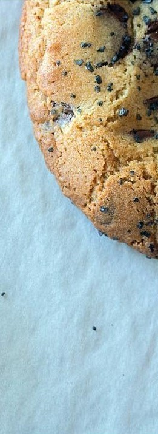
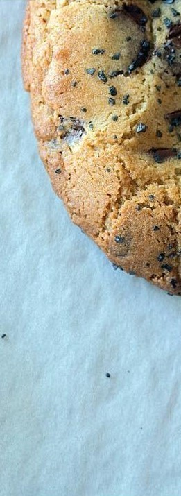
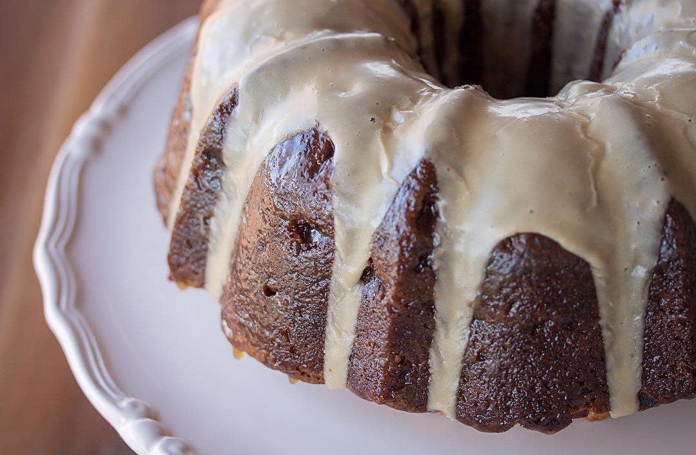

Some of My Favorite Recipes
Apple Bundt Cake with Butterscotch Glaze
Ingredients: The Cake
- 2 cups of granulated sugar
- 1½ cups of vegetable oil
- 3 eggs
- 2 tsp vanilla extract
- 3 cups of AP flour
- 1 tsp baking soda
- 1 tsp salt
- 4 apples, peeled, cored, and finely diced
Ingredients: The Glaze
- ½ cup heavy cream
- 1 cup brown sugar
- 1 stick of unsalted butter
- Pinch of salt
- Sifted confectioner’s sugar (about a cup)
Preparation
Cream together the sugar, vegetable oil, and vanilla, then add eggs one at a time. Whisk dry ingredients together then add
to your wet ingredients. Mix until just combined. Add apples by hand, folding with a rubber spatula. Scoop into a well greased bundt pan.
Bake at 350°F for 50-60 minutes or until a toothpick comes out clean. While you are waiting for the cake to bake, make your butterscotch glaze. Put cream, sugar, butter, and salt in a small saucepan.
Boil for about 3 minutes, whisking constantly, until the glaze is fairly thick.
Allow the cake to cool briefly (I usually let mine sit for 5-10 minutes) before unmolding onto a cooling rack. Using a pastry brush, generously paint the glaze all over the bundt cake. I usually do this twice. Doing this while the cake
is still quite warm allows for the glaze to be absorbed better.
I then take my leftover glaze and whisk it with some confectioner’s sugar to make a thick icing. If it’s too thick, you can
always add some milk to thin it out. If it’s not thick enough, add more sifted confectioner’s sugar. I gently
pour this over the top of the cake when it’s cool.

Almond & Cardamom Pound Cake
Ingredients
- 3/4 cup (1 1/2 sticks) unsalted butter, room temperature, plus more for pan
- 1 1/4 tsp. baking powder
- 1 tsp. ground cardamom
- 3/4 tsp. kosher salt
- 1/4 cup whole milk
- 1/2 cup crème fraîche plus more for serving
- 1 cup sugar
- 3 large eggs, room temperature
- 3/4 tsp. vanilla extract
- 1/4 tsp. almond extract
- 1/4 cup sliced almonds
- 2 cups all-purpose flour plus more for pan
Preparation
Place a rack in middle of oven and preheat to 350°. Butter a 9x5x3” loaf pan; line bottom and long sides with a strip of
parchment paper, leaving overhang. Butter parchment and dust pan with flour, tapping out any excess.
Whisk baking powder, cardamom, salt, and 2 cups flour in a medium bowl; set aside. Whisk milk and ½ cup crème fraîche in
a small bowl; set aside.
Using an electric mixer on high speed, beat sugar and ¾ cup butter in a large bowl until light and fluffy, about 4 minutes.
Add eggs one at a time, beating to blend between additions and occasionally scraping down sides and bottom
of bowl with a spatula, then add vanilla and almond extracts.
Reduce speed to low and add dry ingredients in 3 additions, alternating with crème fraîche mixture in 2 additions, beginning
and ending with dry ingredients; beat just until combined. Scrape batter into prepared pan, smooth top, and
sprinkle with sliced almonds.
Bake cake, rotating halfway through, until golden brown and a tester inserted into the center comes out clean, 55–65 minutes.
(Tent with foil if browning too quickly.)
Transfer pan to a wire rack and let cake cool in pan 15 minutes. Using parchment overhang, gently remove cake from pan and
transfer to rack; let cool.
Slice cake and serve with Tea-Poached Plums and crème fraîche.